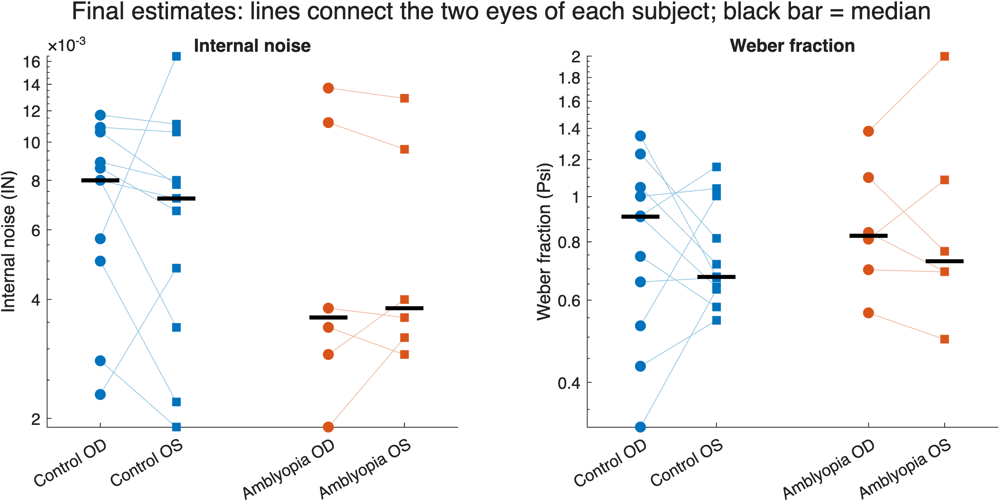
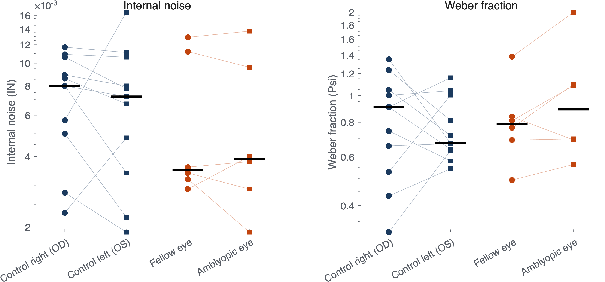
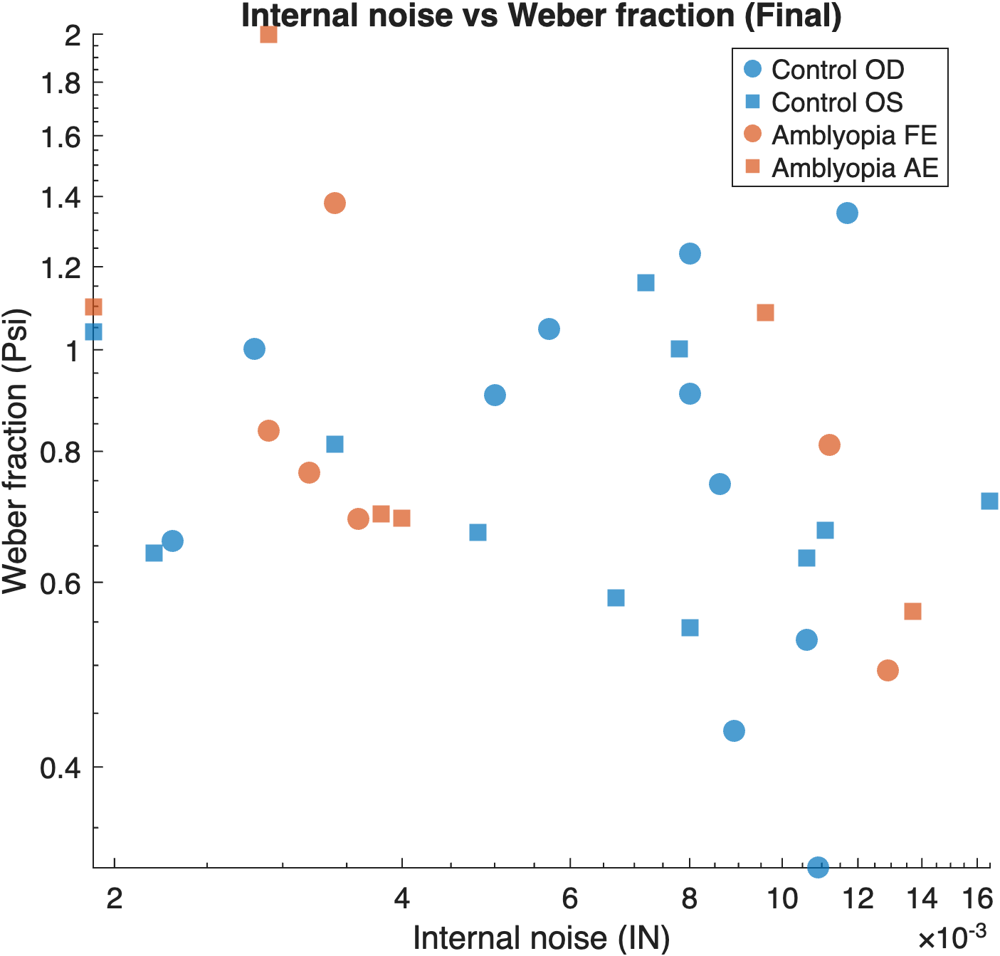
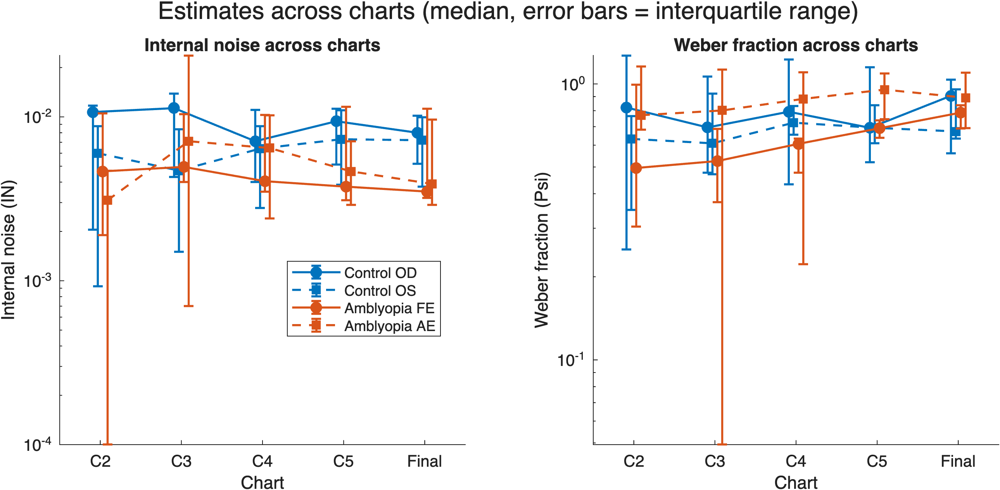
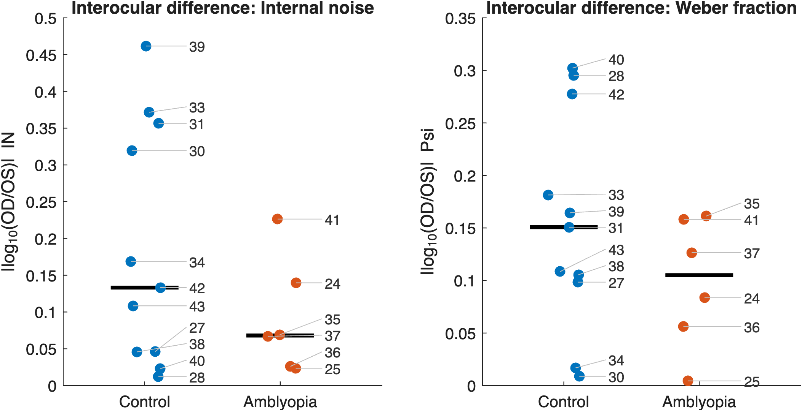

BEHAVIORAL · ORIENTATION DISCRIMINATION · THRESHOLD VS CONTRAST · ← stripe-ring task demo
How much does each eye's contrast-discrimination threshold rise with pedestal contrast? Fitted internal noise (IN) and Weber fraction (Psi), measured separately for each eye in 11 child control observers (ages 6–17) and 6 children with amblyopia (ages 6–16) (subjects 26 and 32 excluded; see footnote).
QUESTION 1
AIM-TvC+ dipper function: TvC(c) = √((IN² + c²)·(1+Psi)) − c, across a range of pedestal contrasts, from each subject's fitted final IN/Psi (not raw trial data — see repo CLAUDE.md).
† Psi estimate sits at the model's upper fitting bound (2.0) — likely an unreliable fit for that eye, included as-is.
QUESTION 2
Four comparisons × two parameters. Log10-scale Welch/paired t-tests with a Mann-Whitney/Wilcoxon cross-check, Holm-corrected within each parameter (2 families of 4 tests).
Effect size = Cohen's d (independent) / dz (paired) on log10 values, with approx. 95% CI (Hedges normal approximation). None of the 8 comparisons reach significance after Holm correction, given the small amblyopic-eye groups (n=6) — but Psi shows a consistent moderate-to-large effect in the expected direction (amblyopic eye worse) that IN does not. |Δ mean| vs MCD compares the raw group-mean difference against the "minimum detectable cohort difference" reported in the AIM-TvC+ method paper's own test-retest data (IN: 0.0023, Psi: 0.1079) — an independent, non-circular check: both Psi comparisons involving the amblyopic eye exceed this reference, while neither IN comparison does.
ADDITIONAL FIGURES
The lab's existing MATLAB pipeline (group comparisons, mixed models, IN/Psi correlation, convergence across charts) on the same data, same exclusions. Full numeric output: results/WF_IN_results.xlsx.





Subjects 26 (did not understand the task) and 32 (no TvC data recorded) excluded throughout. Full pipeline, data survey, and source at github.com/nutsapirtskhelava/tvc-stripe-demo.